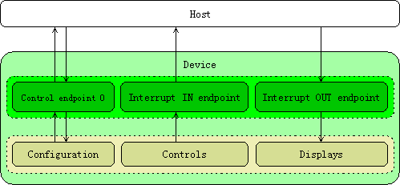

Description
hid-keyboard.dir::USB HID Basic
This page gives generic details on the HID class, including its purpose, architecture and how it is supported by various operating systems.
Purpose
The HID class has been specifically designed for Human Interface Devices, i.e., devices which are manipulated by humans to control a computer or an electronic device. This includes
common peripherals such as a keyboard, a mouse or a joystick, as well as many other interfaces: remote controllers, switches, buttons, dedicated game controls, and so on.
It is also possible to use the HID class for devices which do not require human interaction, but still deliver information in a similar format. For example, devices like a thermometer or a battery indicator are supported.
In addition, the HID class also makes it possible to not only receive data from devices but also to send commands to them. Indeed, many devices offer some kind of display to give back information to the user, e.g., the LEDs on a keyboard.
Finally, since it is quite simple to send and receive data using the HID class, it can be used as a generic means of communication between a device and a host. This is made possible because of the very flexible framework defined in the HID specification.
In this document, three uses of the HID class will be detailed step-by-step, each showing one particular feature of the class. The first example shows the interaction with a simple mouse. In the second example, a keyboard is implemented to demonstrate the possibility to send data to a peripheral. The last example explains how to use HID as a simple two-way communication channel.
Interface
An HID device only needs
one interface descriptor. It should have the HID interface class code in its bInterfaceClass field. There are special subclass and protocol codes to specify if the HID device is a mouse or a keyboard, and must be supported by the BIOS. In such a case, the interface must be declared as a Boot Interface, and the type of the device (mouse or keyboard) must be given in the bInterfaceProtocol field.
Endpoints
Up to three endpoints can be used with an HID interface. The first two are the default Control endpoint 0, as well as an Interrupt IN endpoint. They are mandatory and shall always be declared. An optional Interrupt OUT endpoint can be added as well.
Endpoint 0 is used for class-specific requests, as well as receiving data from the host if no Interrupt OUT endpoint has been defined. In addition, the host can also explicitly request or send report data through this endpoint.
The Interrupt IN and OUT pipes are used for sending asynchronous data to the host, and to receive low-latency information.

HID Class Driver Architecture
Class-Specific Descriptors
There are three class-specific descriptors defined in the
HID specification 1.11: the HID descriptor, the report descriptor and the physical descriptor.
HID Descriptor
The HID descriptor gives information about the HID specification revision used, the country for which a device is localized, and lists the number of class-specific descriptors, including their length and type.
HID Descriptor Format
| Field | Size(bytes) | Description
|
| bLength | 1 | Total length of the HID descriptor
|
| bDescriptorType | 1 | HID descriptor type (21h)
|
| bcdHID | 2 | HID specification release number in BCD format
|
| bCountryCode | 1 | Code of the country for which the device is located.
Should be 0 if the device is not localized.
|
| bNumDescriptors | 1 | Number of class-specific descriptors used by the device.
|
| bDescriptorType | 1 | Type of the first class-specific descriptor.
|
| bDescriptorLength | 1 | Total length of the first class-specific descriptor.
|
| [bDescriptorType] | 1 | Type of the second class-specific descriptor.
|
| [bDescriptorLength] | 1 | Total length of the second class-specific descriptor.
|
| ... | | |
There is always at least one Report descriptor for an HID device, so the corresponding fields must be present in the HID descriptor. If other descriptors are defined, they must also be described here.
Report Descriptor
A HID device must have at least one
Report descriptor. It defines the type of data manipulated by the device, which is referred to as report. When the device wants to notify that the cursor has moved, for example, it sends the corresponding report in the format previously defined in the Report descriptor.
This descriptor is quite different from others, as it does not have a fixed table of values. Instead, it is made up of a variable number of items, which collectively identify the information that a host can expect from or send to the device.
There are five categories of items:
- Input items, which define the format and type of the data sent by the device.
- Output items, which define the format and type of the data expected by the device
- Feature items, which define data sent to or received from the device, and not intended for the end user, such as configuration parameters.
Collection items, which identify a set of data as related to the same group.
- End Collection items, which close other Collection items.
Usually, a Report descriptor defines only one use (report) for a device, e.g., a mouse. However, it is possible to declare several reports to perform different tasks, e.g., mouse & keyboard. This is done by assigning a different Report ID to each report; this makes it possible for the device to send both reports through the same Interrupt endpoint, while still permitting the host to correctly identify the data. Using only a single endpoint for several functionalities is very powerful, as the remaining ones can then be used by other interfaces (CDC, MSD, etc.) for an even more versatile device.
More details about Report descriptors will be given in the implementation examples. For more information about the possible items, tags and values, please refer to the HID specification 1.11.
Physical Descriptor
A
Physical descriptor can be used to give information about which human body part is used to activate a particular control. While this is a useless piece of information for most devices, it can be relevant for complex devices which provide many similar controls. In such a case, a Physical descriptor allows an application to assign its functionalities more appropriately; for example, a game controller often has a large number of buttons, with some of them more accessible than the others. Those buttons would be assigned the most useful actions.
Since physical descriptors are not used very often, and are not useful in the case studies described in this document, they will not be discussed further.
Class-specific Requests
...
GetDescriptor
While
GET_DESCRIPTOR is a standard request (defined in the
USB specification 2.0), new descriptor type values have been added for the HID class. They make it possible for the host to request the HID descriptor, Report descriptor and Physical descriptors used by the device.
When requesting a HID-specific descriptor, the wIndex field of the request must be set to the HID interface number. For standard requests, this field is either set to 0 or, for String descriptors, to the index of the language ID used.
SetDescriptor
Similarly,
SET_DESCRIPTOR is a standard request with added HID-specific values. It is used by the host to change the HID descriptors of a device. This is an optional request, and has few practical uses.
GetReport
The host can explicitly ask the device for a report by using the
GET_REPORT request. However, it should be used primarily to get the
state of feature items and absolute values at initialization time, not for consistent device polling.
The requested report is identified either by its Report ID (if they are used), and/or by its type (Input, Output or Feature).
Please note that a GET_REPORT request is different from a GET_DESCRIPTOR request for the Report descriptor. The latter returns the whole Report descriptor, i.e., all the items declared. The former returns the data defined by this descriptor.
SetReport
SET_REPORT is similar to GET_REPORT, except this request is used for changing the
state of a report, instead of simply retrieving it.
For an Input report, this request can either be considered meaningless, or can be used to reset the current status of a control. For example, it could be used to calibrate the neutral position of a joystick.
SetIdle
This request is used to specify the minimum amount of time, called
Idle rate, that a device must wait before transmitting a report if its
state has not changed. This means the device must NAK all polls on its Interrupt IN endpoint until the report
state changes, or the guarding period expires.
The SET_IDLE command can either be issued for a particular duration, or for an undefined period of time. The upper byte of the wValue field is used to specify this duration. In addition, if the device generates multiple reports, the Report ID of the target report to affect can be specified in the lower byte.
In practice, this request is often used with a keyboard to put a small delay before a key is repeated continuously. For a mouse, it must be set to 0, meaning that the device should never report an unchanged
state.
GetIdle
The GET_IDLE request is issued by the host to retrieve the current Idle rate of the device. A particular Report can be specified with its Report ID.
GetProtocol
This request returns the protocol currently used by the device. This can either be the Report protocol (
wValue set to 0) or the Boot protocol (
wValue set to 1). Since a device supporting the Boot protocol can operate differently depending on which mode it is in, the host system can retrieve or change this mode with the GET_PROTOCOL and SET_PROTOCOL requests.
This request is only need for devices supporting the Boot protocol.
SetProtocol
Whenever an HID device starts up, it should use the Report protocol by default. However, the host driver shall still use the SET_PROTOCOL request to specify if the device should use the Report protocol or the Boot protocol.
Host Drivers
Most operating systems provide a generic HID driver which automatically handles standard devices, such as keyboard, mice and joystick. In addition, the driver can also be used by the application to easily access custom and vendor-specific devices.
Source
The documentation for this Page was generated from the following file:
hid-keyboard.dir